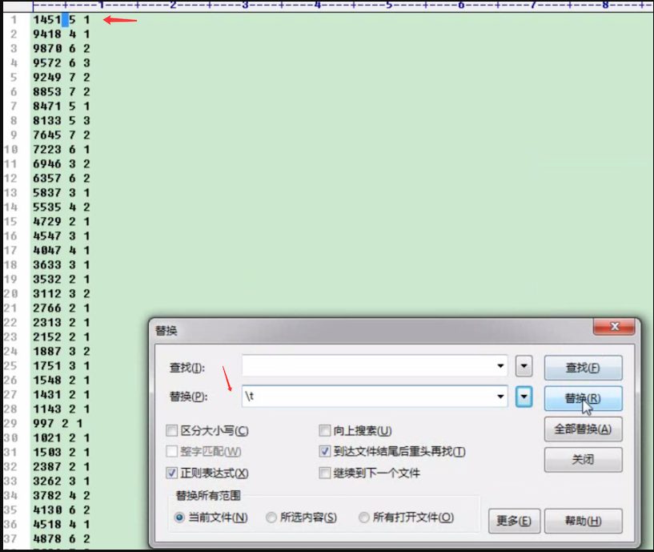

mysql优化之mysql status的周期变化
0 条评论主要任务是『通过脚本，刷新观察status，是否有周期性故障或波动』
根据mysql大的优化思路，当系统遇到问题时候，我们先要诊断，而不是眉毛胡子一把抓，直接所谓的因为你只是回答一些大而化之的调优原则,
比如:”建立合理索引”(什么样的索引合理?) “分表分库”(用什么策略分表分库?)“主从分离”(用什么中间件?)并没有从细化到定量的层面去分析.
编写脚本查看mysql状态
1 |
|
返回200多行，我们注重看下面几个：
1 | Queries #当前已经发生了多少次查询 |
使用bash shell和awk脚本来编写一个每秒去获取mysql服务器的状态
脚本如下：
countstatus
1 |
|
结果如下所示：
1 | 338921 2 1 |
注意：当前行 减 上一行，才是每秒钟的请求数。
同样利用awk来处理一下mysqlstatus.txt
1 | awk '{q=$1-last;last=$1}{printf("%d %d %d\n",q,$2,$3)}' mysqlstuts.txt |
利用exel转换成折线图

(从上图可以看出，大约30秒一个周期)
是否和你的缓存失效时间周期一致，那么就首先可以选择调整缓存生效策略，使失效时间分散或夜间失效。